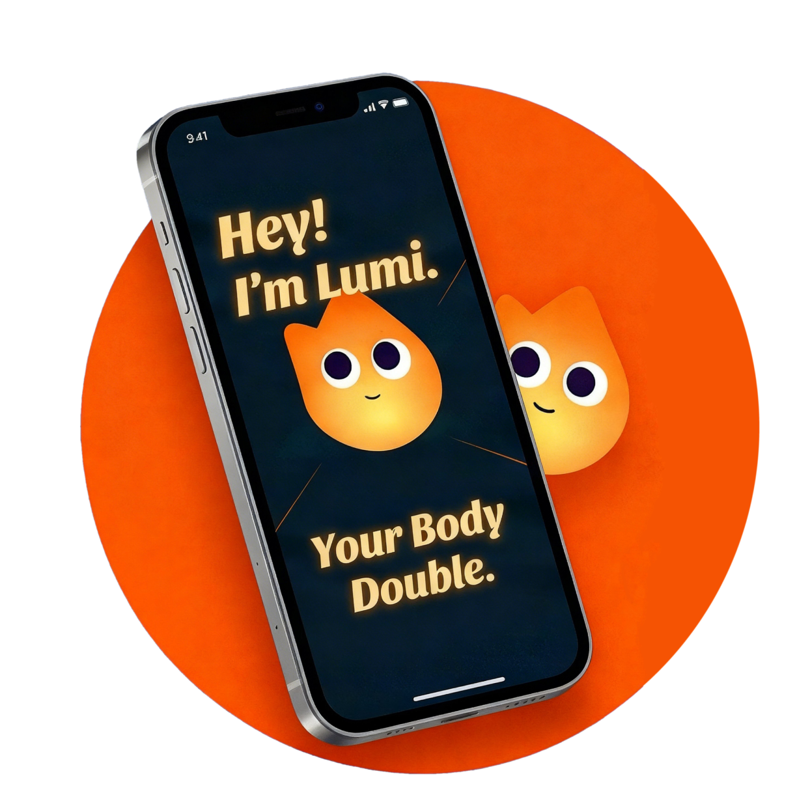
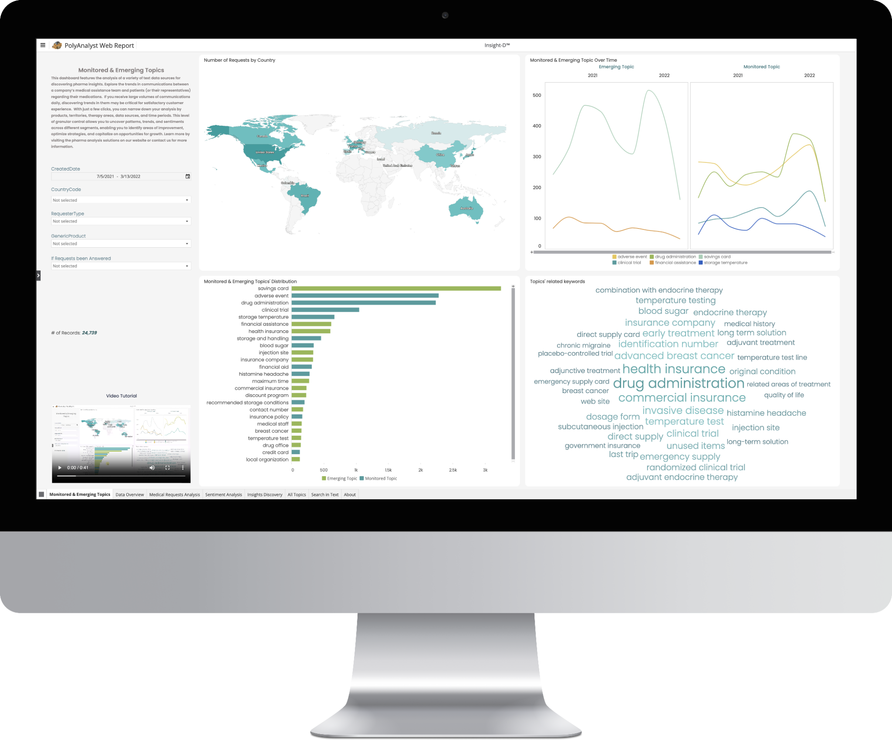

Hi, I’m Echo,
a product designer bringing clarity through craft and storytelling.
I bring 7 years of experience across SaaS, e-commerce, and mental health, balancing user needs with business goals.
Selected work2023–2026

Lumi AI
An AI body double for getting started. UX strategy, visual design, and a playful launch.

VoiceOut
A cloud companion helping people name, express, and reflect on everyday feelings.

Insight-D dashboard
An AI dashboard that surfaces pharmaceutical topics and trends from patient and clinician conversations.
Previous work2019–2023
Curiosity brought me here.
My background in journalism and product marketing shapes how I ask questions, design experiences, and tell the story around them.